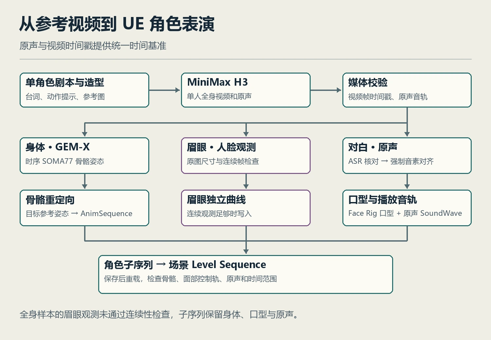
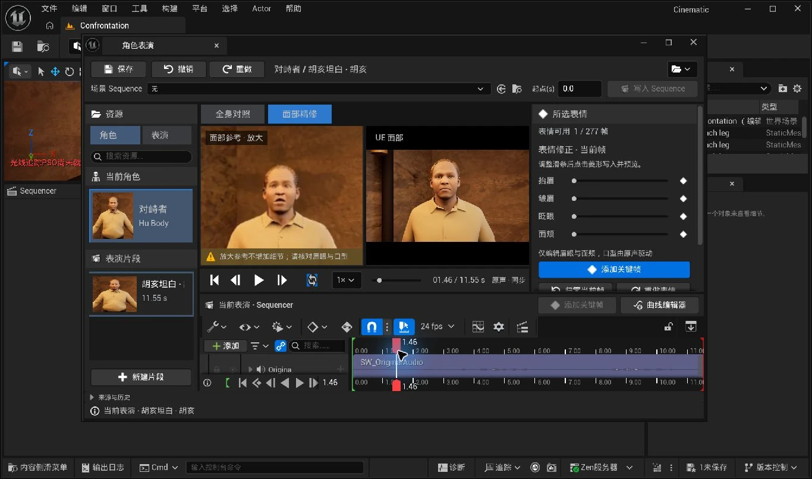
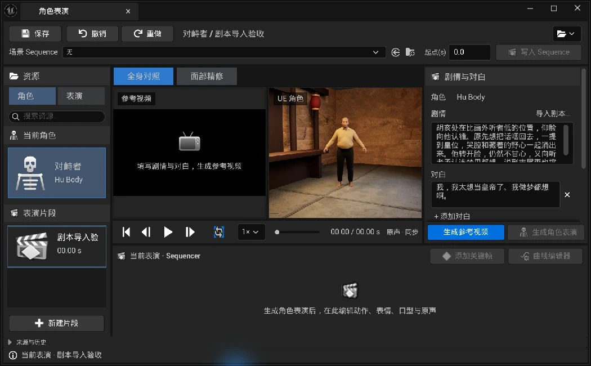
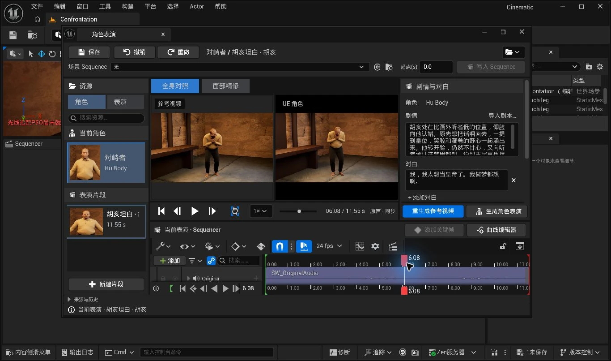
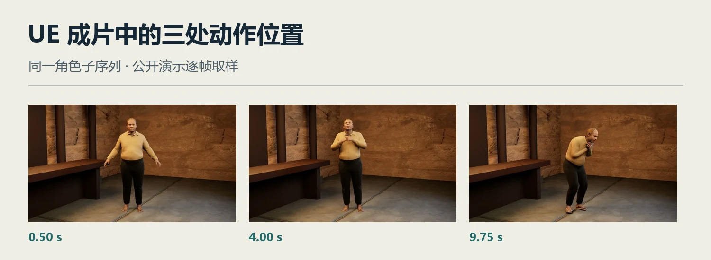
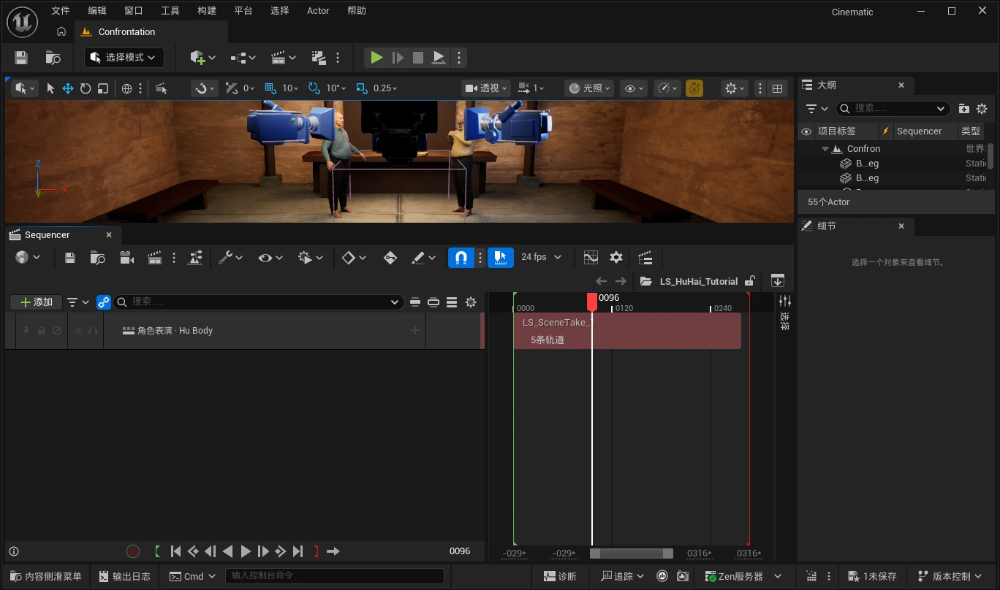

数字人表演生成
以一段 11.55 秒的独白为例，拆解视频怎样变成 UE 中可编辑的角色子序列，以及身体、口型和眉眼如何分别恢复与验收。
 放大查看 ↗
放大查看 ↗本页目录
这场戏交付的是可编辑的序列
胡亥有一段约 11.55 秒的独白。项目把这场戏拆成单角色剧本，保留台词、动作提示和角色造型参考，再用 MiniMax H3 生成固定机位的单人全身参考。参考视频提供了捂胸、前倾和对白的节奏。
目标产物是 UE Sequencer 能编辑和重载的角色子序列。制片可以改变这个片段在场景中的起点，动画师也能分别处理身体轨、面部轨和原声音轨。要做到这一点，生成的视频要先拆回带时间信息的动画数据。
同一段表演，参考视频与 UE 输出
左边是工程选中的 H3 全身参考，右边是用它生成的 UE 成片。参考文件的 SHA-256 与烘焙记录一致。两个画面从 0 秒开始，都是 24 fps、277 帧，播放一条参考原声。
可以拖到约 6 秒并暂停，核对两边捂胸时肩、肘和躯干怎样变化。捂胸与前倾在同一段对白附近出现，手指形状和脚底接触还需要结合具体帧检查。
同一份媒体怎样进入三条处理链
媒体校验先确认参考视频可解码、原声存在，并为每帧保留显示时间戳 PTS。每条恢复链之后都回到这份时间基准。忽略音频起点会造成固定的口型错位，帧间隔变化时还要按每帧的实际时间取样。
项目另做了一次带偏移的原声导入验证。音频比画面晚 0.1375 秒，在 24 fps 下相当于第 3.3 帧。若直接写到第 3 帧，声音会提前 12.5 毫秒。导入器用更细的 Sequencer tick 保存入点，重载后仍保持了 0.1375 秒的偏移。
身体由 GEM-X 的时序人体模型估计 SOMA77 骨骼姿态。重定向要对齐源骨架和目标骨架的参考姿态，再把姿态写进 UE 的 AnimSequence。中间轨按源时间戳取样，旋转用四元数插值，平移单独插值。
对白先用语音识别核对台词和词边界，再用强制对齐找出每个音素的时间段。项目把音素转成用于表现发音的口型控制曲线，落到 Face Control Rig。用于识别和对齐的分析音频只参与计算，播放轨沿用参考视频原声。
眉眼从画面中的人脸恢复得到。检测器的观测需要满足源画尺寸和时间连续性要求，才能形成可烘焙的眉眼曲线。眉眼控制和发音控制各自有写入范围，眉眼素材不足时仍可保存音频驱动的口型。

放大查看 ↗为什么能跟上对白，却没有连续哭相
全身参考有 277 帧。人脸恢复报告显示，179 帧检测到了脸，被检测到的脸部尺寸中位数约为 38.5 × 44.9 像素。恢复逻辑在放大局部图像做推理后，把检测结果换算回原画坐标，再使用原画短边至少 64 像素的项目阈值判断观测是否可用。最终只有 1 帧达到门槛。
时间连续性是另一道检查。实现允许在前后都有连续观测时沿源时间戳插补短缺口，长时间遮挡则向中性过渡。只有一个孤立观测时，这一帧无法给出动作的起止和变化过程，所以这版不输出连续眉眼表情。口型取自音素时间段，仍能按对白工作。
独立的原片近景中，130 帧有 112 帧过了相同的尺寸门槛。全身取景保留了重心、捂胸和弯腰，近景让眉眼占据更多源像素。两条素材的镜头和时长不同，这个对比用于判断观测可用性。

放大查看 ↗同一段双人输入，两版身体恢复
这是项目中另一段 5.175 秒的双人验证片。三联画左边是固定的参考视频，中间是早期用 MediaPipe 逐帧恢复后的 UE 输出，右边是采用 GEM-X 时序姿态与下身接触处理的 UE 输出。两次运行记录引用同一输入指纹，均保存了 124 帧的重载骨骼取样。
约 1.25 秒时，可以看到黄色上衣角色在中间版本里的手肘偏向身后，右侧版本的双臂姿态更接近参考。两版同时涉及恢复和重定向设置的变化，画面比较的是整条身体处理链的结果。
把身体与表情拆开后，怎样取舍
单段全身参考已经能为同一套时间轴提供身体和原声。若交付目标加上细微哭相，近景可以作为额外的眉眼观测来源。接入前要对齐角色、台词时间点和姿势，并核对表情控制是否覆盖了口型控制。这里的近景用于验证观测条件，本次成片的配方仍是全身参考加原声。
身体分支也有过方案调整。项目历史记录里，早期逐帧 MediaPipe 身体草稿出现过肘部姿态跳变和掌面翻转。后来保留 GEM-X 时序结果，并在下身派生分支中使用接触处理后的根平移和腿部旋转，上身局部姿态沿用原估计。
| 方案 | 本次证据 | 适用范围与代价 |
|---|---|---|
| 单段全身参考 | 1 / 277 帧通过面部尺寸门槛。UE 成片可见捂胸和前倾，保留对白与口型。 | 同一条媒体提供身体时序与原声，有限的面部像素难以支撑近景级表情。 |
| 独立近景观测 | 112 / 130 帧通过同一门槛。 | 适合补充眉眼观测，接入身体表演前需要额外做时间和姿态对齐。 |
| 把缺失的面部帧直接补满 | 本次实现只插补有连续锚点的短缺口，忽略孤立观测。 | 可以增加曲线覆盖时间。缺少连续锚点时，插补结果无法体现表情真实的变化过程。 |
一句对白的四种表情预设
面部工具另做了一组固定条件的测试。角色、机位、对白和帧数相同，在 UE 中分别渲染中性、愤怒、喜悦和悲伤。合片共用一条声音轨，可以同时看眉眼变化和发音。
这是独立的人工预设试验，展示的是在口型之外调整表情的方式。若任务要恢复这段胡亥戏的眉眼，仍需对应的画面观测或动画师的关键帧。
每个阶段留下哪些可复查的记录
工作流按节点保存尝试。执行前冻结参数、上游结果描述和实现版本。执行后登记产物路径及 SHA-256，并把本次结果与尝试编号关联。替换参考视频会让依赖它的媒体、身体、脸部、配准、烘焙和验证节点失效，之前的输入与结果仍能拿来对照。
复查时先追到选中的视频，再沿身体、脸部和对白的产物追到 UE 重载报告。工程界面把复查分成全身对照、面部精修和场景 Sequencer 三种视图，能分别回到动作时序、表情观测和写入位置。
| 阶段 | 留存证据 | 本例可复核值 |
|---|---|---|
| 剧本与选片 | 节点输入、尝试编号与选中视频的文件指纹 | 工作流保留 3 次视频节点记录，可追溯当前选片。 |
| 媒体与原声 | 视频帧时间戳、解码后的原声和播放时间轴 | 24 fps、277 帧。UE 原声重载为 32 kHz，音频 11.55 秒。 |
| 身体与口型 | 时序姿态、目标骨骼重定向、原声音素对齐 | 独立重载后可读取 277 帧身体取样，面部控制键保留。 |
| 眉眼观测 | 逐帧人脸观测与尺寸统计 | 检测到脸 179 帧，达到 64 px 短边门槛 1 帧。 |
| 资产核验 | 独立进程重载报告 | 播放轨 1 条，PCM 核验通过，表现质量状态保留待审阅。 |
| 场景写入 | 目标序列、子序列、起点和时长 | 场景入点 0 秒，子序列 11.55 秒。 |

放大查看 ↗
放大查看 ↗保存成功之后，用什么证据验收
这一版把角色子序列放到场景的第 0 秒，写入记录给出的时长是 11.55 秒。随后由独立 UE 进程重新打开保存的资产，验证原声 PCM 内容一致、播放轨只有一条，以及身体动画烘焙后面部控制键仍可读取。重载报告保存了 277 帧骨骼取样，能把动作异常定位到具体时间点。
实际成片能看出角色由站姿进入捂胸和前倾。原片有低位仰脸的姿态，生成参考从站姿进入弯腰，重定向沿用了参考视频的动作。工程记录把这版质量留在待审阅，连续哭相、与原片逐动作一致以及精确接触还要单独检验。

放大查看 ↗
放大查看 ↗